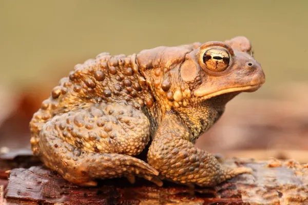

Anaxyrus americanus, também conhecido por Sapo-americano é uma espécie de sapo encontrada em todo o leste dos Estados Unidos e Canadá. A classificação da espécie relativa ao risco de extinção é considerada "pouco preocupante".
